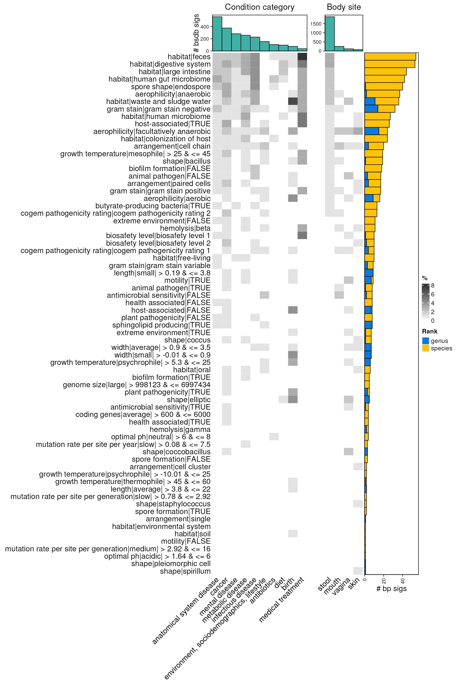

vignettes/articles/high_throughput_bsea_bsdb.Rmd
high_throughput_bsea_bsdb.Rmd
library(bugphyzzAnalyses)
library(bugphyzz)
library(purrr)
library(tidyr)
library(dplyr)
library(bugsigdbr)
library(taxPPro)
library(ggplot2)
library(ggbreak)
library(BiocParallel)
library(forcats)
library(stringr)
library(ComplexHeatmap)
## add a commentUse TypicalMicrobiomeSignatures to create background sets. Use a cutoff of 0.01 prevalence for filtering:
tms <- importTidyTMS(prevalence_threshold = 0.01) |>
mutate(
body_site = case_when(
body_site == 'feces' ~ 'stool',
body_site == 'nasalcavity' ~ 'nose',
body_site == 'oralcavity' ~ 'mouth',
TRUE ~ body_site
)
)Create sets at the genus and species ranks for each of the body sites (skin, vagina, oralcavity, nasalcavity, stool):
body_sites <- c(
mouth = 'mouth', vagina = 'vagina', stool = 'feces',
nose = 'nose', skin = 'skin of body'
)
ranks <- c('genus', 'species')
l <- length(body_sites) * length(ranks)
tms_sets <- vector('list', l)
n <- 1
for (i in seq_along(body_sites)) {
for (j in seq_along(ranks)) {
names(tms_sets)[n] <- paste0(names(body_sites)[i], '__', ranks[j])
tms_sets[[n]] <- tms |>
filter(body_site == names(body_sites)[i], rank == ranks[j]) |>
pull(taxid) |>
unique()
n <- n + 1
}
}
names(tms_sets)
#> [1] "mouth__genus" "mouth__species" "vagina__genus" "vagina__species"
#> [5] "stool__genus" "stool__species" "nose__genus" "nose__species"
#> [9] "skin__genus" "skin__species"Only use signatures with ‘decreased’ or ‘increased’ values in the ‘Abundance in Group 1’ column, i.e., signatures from experiments with differential abundance results.
Five body sites: skin, vagina, oral cavity, stool, and nasal cavity.
body_sites <- c(
mouth = 'mouth', vagina = 'vagina', stool = 'feces',
nose = 'nose', skin = 'skin of body'
)
bsdb <- importBugSigDB(version = 'devel') |>
filter(`Abundance in Group 1` %in% c('increased', 'decreased')) |>
filter(`Host species` == 'Homo sapiens')
ub <- getOntology('uberon')
#> Loading required namespace: ontologyIndex
#> Using cached version from 2024-02-01 15:58:17
bsdb_sets <- vector('list', l)
n <- 1
for (i in seq_along(body_sites)) {
for (j in seq_along(ranks)) {
sub_bsdb <- subsetByOntology(
df = bsdb, column = 'Body site', term = body_sites[i], ontology = ub
)
names(bsdb_sets)[n] <- paste0(names(body_sites)[i], '__', ranks[j])
sig <- bugsigdbr::getSignatures(
df = sub_bsdb, tax.id.type = 'ncbi', tax.level = ranks[j], min.size = 5
)
if (length(sig) > 0) {
bsdb_sets[[n]] <- sig
}
n <- n + 1
}
}
bsdb_sets <- discard(bsdb_sets, is.null)
names(bsdb_sets)
#> [1] "mouth__genus" "mouth__species" "vagina__genus" "vagina__species"
#> [5] "stool__genus" "stool__species" "nose__genus" "nose__species"
#> [9] "skin__genus" "skin__species"
tms_sets <- tms_sets[names(bsdb_sets)]
background_sets <- vector('list', length(bsdb_sets))
for (i in seq_along(background_sets)) {
names(background_sets)[i] <- names(bsdb_sets)[i]
background_sets[[i]] <- map(
bsdb_sets[[names(bsdb_sets)[i]]], ~ {
unique(c(.x, tms_sets[[ names(bsdb_sets)[i] ]]))
}
)
}
names(background_sets)
#> [1] "mouth__genus" "mouth__species" "vagina__genus" "vagina__species"
#> [5] "stool__genus" "stool__species" "nose__genus" "nose__species"
#> [9] "skin__genus" "skin__species"Import data:
bp <- importBugphyzz()
#> Importing multistate data...
#> Using data downloaded on 2024-02-01 15:58:24.
#> Importing binary data...
#> Using data downloaded on 2024-02-01 15:58:33.
#> Importing numeric data...
#> Using data downloaded on 2024-02-01 15:58:35.Create signatures at the genus level:
bp_sigs_gn <- lapply(bp, function(x) {
makeSignatures(
dat = x, tax_id_type = 'NCBI_ID', tax_level = 'genus', min_size = 10
)
}) |>
list_flatten(name_spec = "{inner}") |>
discard(is.null)
head(lapply(bp_sigs_gn, head))
#> $`bugphyzz:aerophilicity|aerobic`
#> [1] 1004301 1004302 1004303 1005038 1017183 1030
#>
#> $`bugphyzz:aerophilicity|anaerobic`
#> [1] 1006481 1006482 1007342 1017280 1047 1051
#>
#> $`bugphyzz:aerophilicity|facultatively anaerobic`
#> [1] 1016 1036132 1069494 1078829 111142 111500
#>
#> $`bugphyzz:arrangement|branched`
#> [1] 109 110932 119852 13159 140625 142587
#>
#> $`bugphyzz:arrangement|cell chain`
#> [1] 100883 102106 1060 1091 1123 121820
#>
#> $`bugphyzz:arrangement|cell cluster`
#> [1] 102231 1033 109166 1099 1134403 120652Create signatures at the species level:
bp_sigs_sp <- lapply(bp, function(x) {
makeSignatures(
dat = x, tax_id_type = 'NCBI_ID', tax_level = 'species', min_size = 10
)
}) |>
list_flatten(name_spec = "{inner}") |>
discard(is.null)
#> Warning: Not enough data for creating signatures. Try different filtering
#> options
#> Warning: Not enough data for creating signatures. Try different filtering
#> options
#> Warning: Not enough data for creating signatures. Try different filtering
#> options
#> Warning: Not enough data for creating signatures. Try different filtering
#> options
#> Warning: Not enough data for creating signatures. Try different filtering
#> options
head(lapply(bp_sigs_sp, head))
#> $`bugphyzz:aerophilicity|aerobic`
#> [1] 100 1001 1002870 1003 1003997 1004316
#>
#> $`bugphyzz:aerophilicity|anaerobic`
#> [1] 100134 1008392 101489 102109 104955 106634
#>
#> $`bugphyzz:aerophilicity|facultatively anaerobic`
#> [1] 1017095 102684 1028752 1031538 1034471 1036133
#>
#> $`bugphyzz:arrangement|cell chain`
#> [1] 102684 1071886 1097 109790 1100 112904
#>
#> $`bugphyzz:arrangement|cell cluster`
#> [1] 1078083 1202667 1280 1281 1282 1283
#>
#> $`bugphyzz:arrangement|filamentous`
#> [1] 102226 103232 103816 104206 1042984 1045501
nworkers <- parallel::detectCores()
enrichment_res <- bplapply(
X = seq_along(bsdb_sets),
BPPARAM = MulticoreParam(workers = nworkers),
FUN = function(i) {
if (grepl('genus', names(bsdb_sets)[i])) {
res <- runEnrichment(
bsdb_sets = bsdb_sets[[i]],
background_sets = background_sets[[i]],
bp_sigs = bp_sigs_gn,
bsdb = bsdb,
fdr_ths = 0.1
) |>
mutate(comb = names(bsdb_sets)[[i]])
} else if (grepl('species', names(bsdb_sets)[i])) {
res <- runEnrichment(
bsdb_sets = bsdb_sets[[i]],
background_sets = background_sets[[i]],
bp_sigs = bp_sigs_sp,
bsdb = bsdb,
fdr_ths = 0.1
) |>
mutate(comb = names(bsdb_sets)[[i]])
}
return(res)
}) |>
discard(~ !nrow(.x))
enrichDF <- bind_rows(enrichment_res) |>
separate(col = 'comb', into = c('body_site', 'rank'), sep = '__') |>
mutate(Attribute_group = sub('^bp:(.*)\\|.*\\|\\w$', '\\1', bp_sig)) |>
mutate(Condition = str_to_lower(str_squish(Condition)))
count(enrichDF, body_site, rank)
#> # A tibble: 8 × 3
#> body_site rank n
#> <chr> <chr> <int>
#> 1 mouth genus 16
#> 2 mouth species 43
#> 3 skin genus 4
#> 4 skin species 14
#> 5 stool genus 110
#> 6 stool species 655
#> 7 vagina genus 20
#> 8 vagina species 2Prepare data about category:
## Create another bsdb data.frame with body_site and condition category info
fname <- system.file(
'extdata', 'condition2category.tsv', package = 'bugphyzzAnalyses',
mustWork = TRUE
)
cond2cat <- read.table(fname, header = TRUE, sep = '\t')
bsdb2 <- map(body_sites, ~ {
subsetByOntology(
df = bsdb, column = 'Body site', term = .x, ontology = ub
)
}) |>
bind_rows(.id = 'body_site') |>
mutate(Condition = str_to_lower(str_squish(Condition))) |>
left_join(cond2cat, by = 'Condition') |>
rename(category = Category)
## Summary for top column barplot annotations -- condition category
summary_category_bsdb <- bsdb2 |>
filter(!is.na(category)) |>
count(category, name = 'category_total') |>
arrange(-category_total)
# tibble::column_to_rownames(var = 'category')
## Summary for top column barplot annotations -- body site
summary_bodysite_bsdb <- bsdb2 |>
filter(!is.na(body_site)) |>
count(body_site, name = 'bodysite_total') |>
arrange(-bodysite_total)
# tibble::column_to_rownames(var = 'body_site')
## Frequency for row annotations -- frequency of enriched physiologies (attrbute_group) by genus
summary_physiolgy_freqs_enrichDF <- enrichDF |>
count(Attribute_group, rank) |>
pivot_wider(
names_from = 'rank', values_from = 'n', values_fill = 0
) |>
mutate(freq = genus + species) |>
arrange(-freq) |>
mutate(Attribute_group = fct_inorder(Attribute_group)) |>
tibble::column_to_rownames(var = 'Attribute_group') |>
select(-freq)
## Create first matrix with condition categories
mat_condition <- enrichDF |>
left_join(cond2cat, by = 'Condition') |>
filter(!is.na(Category)) |>
select(Attribute_group, Category, `BSDB ID`) |>
unique() |> # so I wont' have a single sig twice becouse of rank (species and genus)
count(Attribute_group, Category, name = 'n_enrich') |>
left_join(summary_category_bsdb, by = c('Category' = 'category')) |>
mutate(per = round((n_enrich / category_total) * 100)) |>
select(-n_enrich, -category_total) |>
pivot_wider(
names_from = 'Category', values_from = 'per', values_fill = 0
) |>
as.data.frame() |>
tibble::column_to_rownames(var = 'Attribute_group') |>
as.matrix()
## Create second matrix with body sites
mat_bodysite <- enrichDF |>
left_join(cond2cat, by = 'Condition') |>
filter(!is.na(Category)) |>
select(Attribute_group, body_site, `BSDB ID`) |>
unique() |>
count(Attribute_group, body_site, name = 'n_enrich') |>
left_join(summary_bodysite_bsdb, by = 'body_site') |>
mutate(per = round((n_enrich / bodysite_total) * 100)) |>
select(-n_enrich, -bodysite_total) |>
# select(-bodysite_total) |>
pivot_wider(
# names_from = 'body_site', values_from = 'n_enrich', values_fill = 0
names_from = 'body_site', values_from = 'per', values_fill = 0
) |>
as.data.frame() |>
tibble::column_to_rownames(var = 'Attribute_group') |>
as.matrix()Some variables for both heatmaps
rownames_order <- rownames(summary_physiolgy_freqs_enrichDF)
summary_category_bsdb <- summary_category_bsdb |>
filter(category %in% colnames(mat_condition)) |>
tibble::column_to_rownames(var = 'category')
summary_bodysite_bsdb <- summary_bodysite_bsdb |>
filter(body_site %in% colnames(mat_bodysite)) |>
tibble::column_to_rownames(var = 'body_site')
colnames_order_category <- rownames(summary_category_bsdb)
colnames_order_bodysite <- rownames(summary_bodysite_bsdb)
xrownames <- intersect(rownames(mat_condition), rownames(mat_bodysite))
xrownames <- xrownames[na.omit(match(rownames_order, xrownames))]
mat_condition <- mat_condition[xrownames, colnames_order_category]
mat_bodysite <- mat_bodysite[xrownames, colnames_order_bodysite]
# mat_condition <- mat_condition[rownames_order, colnames_order_category]
# mat_bodysite <- mat_bodysite[rownames_order, colnames_order_bodysite]
max_n <- max(max(mat_condition), max(mat_bodysite))
color_fun <- circlize::colorRamp2(
breaks = c(0, max_n), colors = c('white', 'gray20')
)
lgd <- Legend(col_fun = color_fun, title = "%")
anno_width = unit(2, 'cm')
col_anno_category <- columnAnnotation(
"# bsdb sigs" = anno_barplot(
summary_category_bsdb, bar_width = 1, gp = gpar(fill = '#40B0A6'),
height = anno_width),
show_annotation_name = TRUE,
annotation_name_side = "left"
)
col_anno_bodysite <- columnAnnotation(
"bs" = anno_barplot(
summary_bodysite_bsdb, bar_width = 1, gp = gpar(fill = '#40B0A6'),
height = anno_width),
show_annotation_name = FALSE
)
rownames(mat_condition) <-
sub('bugphyzz:', '', rownames(mat_condition))
ht1 <- Heatmap(
matrix = mat_condition,
cluster_rows = FALSE, cluster_columns = FALSE,
row_names_side = 'left',
show_heatmap_legend = FALSE,
col = color_fun,
column_names_rot = 45,
column_title = "Condition category",
row_names_max_width = max_text_width(
rownames(mat_condition),
gp = gpar(fontsize = 12)
),
top_annotation = col_anno_category
)
rownames(mat_bodysite) <-
sub('bugphyz:', '', rownames(mat_bodysite))
ht2 <- Heatmap(
matrix = mat_bodysite,
cluster_rows = FALSE, cluster_columns = FALSE,
row_names_side = 'left',
show_heatmap_legend = TRUE,
name = '%',
col = color_fun,
column_names_rot = 45,
column_title = "Body site",
row_names_max_width = max_text_width(
rownames(mat_bodysite),
gp = gpar(fontsize = 12)
),
top_annotation = col_anno_bodysite
)
rank_col <- c('#0C7BDC', '#FFC20A')
rownames(summary_physiolgy_freqs_enrichDF) <-
sub('bugphyzz:', '', rownames(summary_physiolgy_freqs_enrichDF))
myRowAnnDF <- summary_physiolgy_freqs_enrichDF[rownames(mat_condition),]
row_anno <- rowAnnotation(
"# bp sigs" = anno_barplot(
myRowAnnDF, bar_width = 1,
gp = gpar(fill = rank_col), width = unit(3, 'cm')),
show_annotation_name = TRUE
)
ht_list <- ht1 + ht2 + row_anno
lgd_list <- list(
Legend(labels = c('genus', 'species'), title = "Rank",
legend_gp = gpar(fill = rank_col))
)
draw(
ht_list, ht_gap = unit(c(1, 0.1), "cm"),
heatmap_legend_side = 'right',
heatmap_legend_list = lgd_list
)
Draw heatmap
#> agg_png
#> 2
sessioninfo::session_info()
#> ─ Session info ───────────────────────────────────────────────────────────────
#> setting value
#> version R version 4.3.2 (2023-10-31)
#> os Ubuntu 22.04.3 LTS
#> system x86_64, linux-gnu
#> ui X11
#> language en
#> collate en_US.UTF-8
#> ctype en_US.UTF-8
#> tz Etc/UTC
#> date 2024-02-01
#> pandoc 3.1.1 @ /usr/local/bin/ (via rmarkdown)
#>
#> ─ Packages ───────────────────────────────────────────────────────────────────
#> package * version date (UTC) lib source
#> aplot 0.2.2 2023-10-06 [1] RSPM (R 4.3.0)
#> BiocFileCache 2.10.1 2023-10-26 [1] Bioconductor
#> BiocGenerics 0.48.1 2023-11-01 [1] Bioconductor
#> BiocParallel * 1.36.0 2023-10-24 [1] Bioconductor
#> bit 4.0.5 2022-11-15 [1] RSPM (R 4.3.0)
#> bit64 4.0.5 2020-08-30 [1] RSPM (R 4.3.0)
#> blob 1.2.4 2023-03-17 [1] RSPM (R 4.3.0)
#> bold 1.3.0 2023-05-02 [1] RSPM (R 4.3.0)
#> bslib 0.6.1 2023-11-28 [1] RSPM (R 4.3.0)
#> bugphyzz * 0.0.1.4 2024-02-01 [1] Github (waldronlab/bugphyzz@47ba4db)
#> bugphyzzAnalyses * 0.1.0 2024-02-01 [1] local
#> bugsigdbr * 1.8.1 2023-10-29 [1] Bioconductor
#> cachem 1.0.8 2023-05-01 [1] RSPM (R 4.3.0)
#> Cairo 1.6-2 2023-11-28 [1] RSPM (R 4.3.0)
#> circlize 0.4.15 2022-05-10 [1] RSPM (R 4.3.0)
#> cli 3.6.2 2023-12-11 [1] RSPM (R 4.3.0)
#> clue 0.3-65 2023-09-23 [1] RSPM (R 4.3.0)
#> cluster 2.1.4 2022-08-22 [2] CRAN (R 4.3.2)
#> codetools 0.2-19 2023-02-01 [2] CRAN (R 4.3.2)
#> colorspace 2.1-0 2023-01-23 [1] RSPM (R 4.3.0)
#> ComplexHeatmap * 2.18.0 2023-10-24 [1] Bioconductor
#> conditionz 0.1.0 2019-04-24 [1] RSPM (R 4.3.0)
#> crayon 1.5.2 2022-09-29 [1] RSPM (R 4.3.0)
#> crul 1.4.0 2023-05-17 [1] RSPM (R 4.3.0)
#> curl 5.2.0 2023-12-08 [1] RSPM (R 4.3.0)
#> data.table 1.15.0 2024-01-30 [1] RSPM (R 4.3.0)
#> DBI 1.2.1 2024-01-12 [1] RSPM (R 4.3.0)
#> dbplyr 2.4.0 2023-10-26 [1] RSPM (R 4.3.0)
#> desc 1.4.3 2023-12-10 [1] RSPM (R 4.3.0)
#> digest 0.6.34 2024-01-11 [1] RSPM (R 4.3.0)
#> doParallel 1.0.17 2022-02-07 [1] RSPM (R 4.3.0)
#> dplyr * 1.1.4 2023-11-17 [1] RSPM (R 4.3.0)
#> evaluate 0.23 2023-11-01 [1] RSPM (R 4.3.0)
#> fansi 1.0.6 2023-12-08 [1] RSPM (R 4.3.0)
#> fastmap 1.1.1 2023-02-24 [1] RSPM (R 4.3.0)
#> filelock 1.0.3 2023-12-11 [1] RSPM (R 4.3.0)
#> forcats * 1.0.0 2023-01-29 [1] RSPM (R 4.3.0)
#> foreach 1.5.2 2022-02-02 [1] RSPM (R 4.3.0)
#> fs 1.6.3 2023-07-20 [1] RSPM (R 4.3.0)
#> generics 0.1.3 2022-07-05 [1] RSPM (R 4.3.0)
#> GetoptLong 1.0.5 2020-12-15 [1] RSPM (R 4.3.0)
#> ggbreak * 0.1.2 2023-06-26 [1] RSPM (R 4.3.0)
#> ggfun 0.1.4 2024-01-19 [1] RSPM (R 4.3.0)
#> ggplot2 * 3.4.4 2023-10-12 [1] RSPM (R 4.3.0)
#> ggplotify 0.1.2 2023-08-09 [1] RSPM (R 4.3.0)
#> GlobalOptions 0.1.2 2020-06-10 [1] RSPM (R 4.3.0)
#> glue 1.7.0 2024-01-09 [1] RSPM (R 4.3.0)
#> gridGraphics 0.5-1 2020-12-13 [1] RSPM (R 4.3.0)
#> gtable 0.3.4 2023-08-21 [1] RSPM (R 4.3.0)
#> highr 0.10 2022-12-22 [1] RSPM (R 4.3.0)
#> hoardr 0.5.4 2024-01-23 [1] RSPM (R 4.3.0)
#> htmltools 0.5.7 2023-11-03 [1] RSPM (R 4.3.0)
#> httpcode 0.3.0 2020-04-10 [1] RSPM (R 4.3.0)
#> httr 1.4.7 2023-08-15 [1] RSPM (R 4.3.0)
#> IRanges 2.36.0 2023-10-24 [1] Bioconductor
#> iterators 1.0.14 2022-02-05 [1] RSPM (R 4.3.0)
#> jquerylib 0.1.4 2021-04-26 [1] RSPM (R 4.3.0)
#> jsonlite 1.8.8 2023-12-04 [1] RSPM (R 4.3.0)
#> knitr 1.45 2023-10-30 [1] RSPM (R 4.3.0)
#> lifecycle 1.0.4 2023-11-07 [1] RSPM (R 4.3.0)
#> magrittr 2.0.3 2022-03-30 [1] RSPM (R 4.3.0)
#> matrixStats 1.2.0 2023-12-11 [1] RSPM (R 4.3.0)
#> memoise 2.0.1 2021-11-26 [1] RSPM (R 4.3.0)
#> munsell 0.5.0 2018-06-12 [1] RSPM (R 4.3.0)
#> ontologyIndex 2.11 2023-05-30 [1] RSPM (R 4.3.0)
#> patchwork 1.2.0 2024-01-08 [1] RSPM (R 4.3.0)
#> pillar 1.9.0 2023-03-22 [1] RSPM (R 4.3.0)
#> pkgconfig 2.0.3 2019-09-22 [1] RSPM (R 4.3.0)
#> pkgdown 2.0.7 2022-12-14 [1] RSPM (R 4.3.0)
#> png 0.1-8 2022-11-29 [1] RSPM (R 4.3.0)
#> purrr * 1.0.2 2023-08-10 [1] RSPM (R 4.3.0)
#> R6 2.5.1 2021-08-19 [1] RSPM (R 4.3.0)
#> ragg 1.2.7 2023-12-11 [1] RSPM (R 4.3.0)
#> rappdirs 0.3.3 2021-01-31 [1] RSPM (R 4.3.0)
#> RColorBrewer 1.1-3 2022-04-03 [1] RSPM (R 4.3.0)
#> rjson 0.2.21 2022-01-09 [1] RSPM (R 4.3.0)
#> rlang 1.1.3 2024-01-10 [1] RSPM (R 4.3.0)
#> rmarkdown 2.25 2023-09-18 [1] RSPM (R 4.3.0)
#> RSQLite 2.3.5 2024-01-21 [1] RSPM (R 4.3.0)
#> S4Vectors 0.40.2 2023-11-23 [1] Bioconductor 3.18 (R 4.3.2)
#> sass 0.4.8 2023-12-06 [1] RSPM (R 4.3.0)
#> scales 1.3.0 2023-11-28 [1] RSPM (R 4.3.0)
#> sessioninfo 1.2.2 2021-12-06 [1] RSPM (R 4.3.0)
#> shape 1.4.6 2021-05-19 [1] RSPM (R 4.3.0)
#> stringi 1.8.3 2023-12-11 [1] RSPM (R 4.3.0)
#> stringr * 1.5.1 2023-11-14 [1] RSPM (R 4.3.0)
#> systemfonts 1.0.5 2023-10-09 [1] RSPM (R 4.3.0)
#> taxa 0.4.2 2022-04-12 [1] RSPM (R 4.3.0)
#> taxize 1.0 2024-02-01 [1] Github (ropensci/taxize@bcff2a6)
#> taxizedb 0.3.1 2023-04-03 [1] RSPM (R 4.3.0)
#> taxPPro * 0.1.0 2024-02-01 [1] Github (sdgamboa/taxPPro@461396b)
#> textshaping 0.3.7 2023-10-09 [1] RSPM (R 4.3.0)
#> tibble 3.2.1 2023-03-20 [1] RSPM (R 4.3.0)
#> tidyr * 1.3.1 2024-01-24 [1] RSPM (R 4.3.0)
#> tidyselect 1.2.0 2022-10-10 [1] RSPM (R 4.3.0)
#> utf8 1.2.4 2023-10-22 [1] RSPM (R 4.3.0)
#> uuid 1.2-0 2024-01-14 [1] RSPM (R 4.3.0)
#> vctrs 0.6.5 2023-12-01 [1] RSPM (R 4.3.0)
#> withr 3.0.0 2024-01-16 [1] RSPM (R 4.3.0)
#> xfun 0.41 2023-11-01 [1] RSPM (R 4.3.0)
#> xml2 1.3.6 2023-12-04 [1] RSPM (R 4.3.0)
#> yaml 2.3.8 2023-12-11 [1] RSPM (R 4.3.0)
#> yulab.utils 0.1.4 2024-01-28 [1] RSPM (R 4.3.0)
#>
#> [1] /usr/local/lib/R/site-library
#> [2] /usr/local/lib/R/library
#>
#> ──────────────────────────────────────────────────────────────────────────────#> top signatures by odds ratio